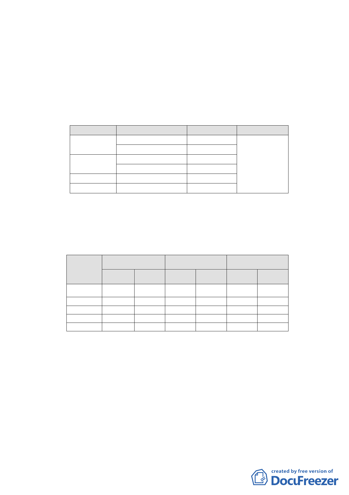

重劃方式開發。
三、案經提本會第595次委員會議決議組成專案小組，經專案小組
98年7月22日、98年12月2日會議審查（會議紀錄詳如附件一、
附件二），市府於99年2月5日依專案審查結論提送修正計畫
書。
四、修正後變更計畫內容：
（一） 變更計畫內容
原計畫
公園用地
道路用地
機關用地
合計
新計畫
第三種住宅區
道路用地
公園用地
第三種住宅區
第三種住宅區
面積(㎡)
622
3
220
554
1,747
3,146
備註
採市地重劃方
式辦理
（二） 土地使用分區管制
第三種住宅區建蔽率不得超過45％、容積率不得超過225
％。
（三） 土地使用面積分配情形
項目
變更前面積
變更後面積
增減面積（㎡）
第三種住
宅區
機關用地
公園用地
道路用地
合計
面積（㎡） 百分比（％） 面積（㎡） 百分比（％）
1,343 18.50 4,246 58.49
1,747
1,613
2,557
7,260
24.06
22.22
35.22
100
0
1,204
1,810
7,260
0
16.58
24.93
100
增加
2,903
減少
1,747
409
747
五、 案經本會99年3月22日第609次委員會議，決議：
（一）公園設置對都市減碳及增加綠覆率有正面助益，基於環境
保護與永續發展，本案公園面積應儘可能維持原計畫面
積，惟考量地主權益及重劃可行性，修正計畫書內公園用
地南側規劃為住宅區正對新光路一段66巷形成路衝問題請
都市發展局予以協調規劃提會說明確認。
（二）其餘依專案小組審查意見、市府本次提會審議資料、會議
當日所送補充資料內容修正計畫書圖，並俟前項內容確認
-4-